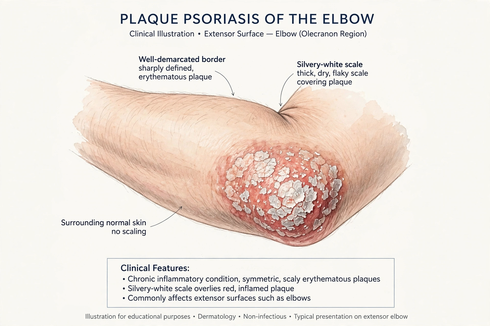

| Psoriasis | |
|---|---|
| Specialty | Dermatology, immunology |
| Symptoms | Red, scaly, itchy patches of skin; nail changes; joint pain in psoriatic arthritis |
| Usual onset | 15–35 years (bimodal) |
| Causes | Immune-mediated disease involving genetic predisposition and environmental triggers |
| Prevalence | c. 2–3% of the world population |
| Treatment | Topical agents, phototherapy, systemic drugs, biologics (TNF, IL-17, IL-23 inhibitors) |

Psoriasis is a long-lasting, noncontagious autoimmune disease characterised by patches of abnormal skin: typically red or purple, raised, dry plaques covered with silvery-white scales, which may itch, crack, and bleed. The disease results from an immune-driven acceleration of the skin-cell life cycle — keratinocytes multiply roughly ten times faster than normal — and varies in severity from small localised spots to complete body coverage. About 2–3% of people worldwide are affected. Psoriasis is associated with an increased risk of psoriatic arthritis (developing in up to 30% of patients), cardiovascular disease, depression, and other immune-mediated conditions. There is no cure, but modern treatments, especially targeted biologic medicines, can achieve near-complete skin clearance in many patients.
The most common form, plaque psoriasis (psoriasis vulgaris, about 90% of cases), presents with sharply demarcated plaques favouring the elbows, knees, scalp, and lower back. Other types include guttate psoriasis (drop-like lesions, often following streptococcal throat infection in young people), inverse psoriasis (smooth lesions in skin folds), pustular psoriasis (sterile pustules; the generalised form is a medical emergency), and erythrodermic psoriasis (widespread redness and scaling, rare but potentially life-threatening). Nails are affected in about half of patients, with pitting, discoloration, and separation from the nail bed (onycholysis). Lesions characteristically appear at sites of skin injury — the Koebner phenomenon.
Psoriasis is multifactorial. Genome-wide studies have identified dozens of susceptibility loci, most strongly PSORS1 within the major histocompatibility complex, containing HLA-C*06:02. Environmental triggers include infections, skin trauma, stress, cold weather, alcohol, smoking, and certain drugs (lithium, beta-blockers, antimalarials). Mechanistically, activated dendritic cells and T cells release cytokines — above all tumour necrosis factor (TNF), interleukin-23, and interleukin-17 — that drive keratinocyte hyperproliferation and the recruitment of neutrophils into the epidermis. This cytokine circuit, elucidated in the 2000s, directly yielded today's biologic therapies.
Diagnosis is usually clinical; skin biopsy shows regular epidermal thickening (acanthosis), elongated rete ridges, loss of the granular layer, and neutrophil collections (Munro microabscesses). Severity is measured by the PASI score (Psoriasis Area and Severity Index) and by body surface area involved, together with quality-of-life indices such as the DLQI, reflecting the disease's substantial psychological burden.
Mild disease is treated with topical agents: corticosteroids, vitamin D analogues (calcipotriol), coal tar, calcineurin inhibitors for sensitive sites, and newer non-steroidal creams such as tapinarof and roflumilast. Moderate disease adds phototherapy (narrowband UVB; PUVA). Moderate-to-severe disease is treated systemically: methotrexate, ciclosporin, acitretin, apremilast, and the biologics — TNF inhibitors (adalimumab, etanercept, infliximab), the IL-12/23 inhibitor ustekinumab, IL-17 inhibitors (secukinumab, ixekizumab, bimekizumab), and IL-23 inhibitors (guselkumab, risankizumab) — which achieve PASI-90 or complete clearance in a majority of treated patients, at the cost of immunosuppression and high price. Screening for psoriatic arthritis and cardiovascular risk factors is part of standard care.
Scaly skin diseases were conflated with leprosy in antiquity — a confusion with severe social consequences — and psoriasis was long grouped with other eruptions. Ferdinand von Hebra unified the clinical picture in 1841, and the name (from Greek psōra, "itch") spread thereafter. Goeckerman's tar-and-UV regimen (1925), corticosteroids (1950s), methotrexate, and finally the biologics mark the therapeutic eras.